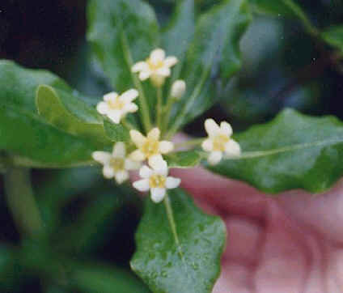
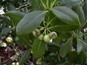
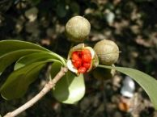

21
海桐
外號:花期最短的樹
海桐屬於大灌木，全株平滑無毛，葉互生，簇集在枝稍，倒披針形，針端呈鈍或圓形，基部銳形長4～10公分，寬2～ 4公分，葉緣有上下波浪狀。花序短圓錐狀，頂生4～6朵，花黃白色。因具有防砂、防潮的能力，所以種來防風、防潮，很有用。我們在挖子尾地區只發現很多小株的小海桐，只有在E2區的堤岸旁發現一株較大的海桐四月中開花一星期，花色黃花冠約一公分大小。 |
||
|  |  |  |